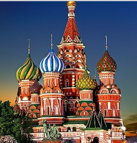
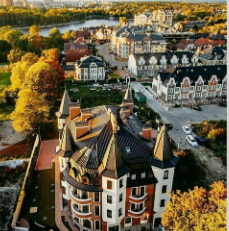

São Petersburgo é a segunda maior cidade da Rússia, politicamente incorporada como uma cidade autônoma. Ela está localizada ao longo do rio Neva, na entrada do Golfo da Finlândia, no Mar Báltico
MOSCOW

Moscow, capital da Rússia, é uma cidade histórica e moderna, conhecida pela Praça Vermelha, o Kremlin e a Catedral de São Basílio. É o centro político e cultural do país, unindo arquitetura clássica e contemporânea em uma metrópole vibrante e cosmopolita.
KALININGRADO

Kaliningrado, Caliningrado ou Calininegrado é a capital do oblast russo homônimo, exclave russo entre a Polónia e a Lituânia, à beira do Mar Báltico. Fundada em 1255 pelos Cavaleiros Teutónicos sob o nome de Königsberg, foi, de 1466 a 1656, parte da Polônia. Também foi a capital da Prússia Oriental e, a partir de 1871, fez parte do Império Alemão.